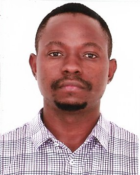

Diobe Belle
Contact and Address
Project Coordinator/Web Developer/Graphic Designer

Profile
- I am a young Cameroonian with a passion and experience for project management and its implementation in different sectors notably construction, life sciences, and general contracts.
- I am equally a self thought graphic designer with experince in developing pivate and team projects
- I am currently taking courses in Web development to be come a full stack developer
Education
University of Buea: September 2008 to Febuary 2012
- B.sc Biochemistry with Minor in Medical Laboratory Tech
Sacred Heart College Mankon: September 2005 to June 2007
- GCE Advanced level with Scientific Inclination
Work Experience
SWIN COMPANY LTD : April 2021-Present
Project Coordination and Accounting
- Handle capital budgeting and resource allocation at the start of every project. I am also responsible for cash flow management, data collection and bi-weekly financial reporting to my hierarchy.
- Process and keep track of administrative and financial paperwork required for payment of completed contracts.
- Reference
ABULINK LIMITED (PARTIME) : January 2023-Present
Project Coordinator
- Abulink limited is a company that assesses and manages risks of potential fire outbreaks in buildings. I am in charge of coordinating the installation of automatic and manual fire extinguishers in designated private and public sites.
- I am equally responsible for the estimation and calculation of bills, costs of delivery and logistics in our projects.
- Reference
Others